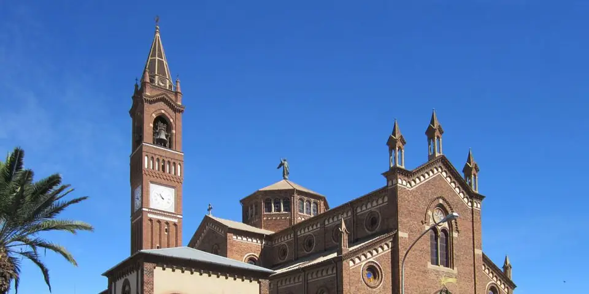

Sub-Saharan Africa
Eritrea on a budget
Eritrea preserves Asmara's 1930s Italian modernist architecture, frozen in time, with espresso cafés, art deco cinemas and a dramatic mountain road down to the Red Sea.
Photo: David Stanley, CC BY 2.0, via Wikimedia Commons

Classic route
Asmara and the mountain road down to Massawa. 5 days.
Before you go
Flights to Asmara: Skyscanner · Kiwi.com · Google Flights
Hostels and guesthouses in Asmara · Massawa · Keren · Dahlak Islands
Tours and tickets: Asmara · Massawa
Mobile data: Eritrea eSIM
Travel insurance: SafetyWing
How much 8 places in Eritrea cost
Daily budgets per person in US dollars: a hostel dorm or simple guesthouse, local food, local transport and the usual entry fees.
-
Asmara
Sip macchiato in old Italian cafés, admire art deco cinemas and the wing-shaped Fiat Tagliero building in a UNESCO-listed modernist city.
Bed $25 · Food $8 · Getting around $3 · Extras $4
Budget tip: Permits are needed to travel outside Asmara. Apply at the tourism office soon after you arrive.
$40per day -
Massawa
A coral-stone Ottoman port town on the Red Sea, with arched arcades, war-scarred buildings and fresh fish grilled by the harbor.
Bed $25 · Food $8 · Getting around $6 · Extras $4
Budget tip: The old steam railway runs only occasionally, usually for groups. Otherwise take the bus down the spectacular mountain road from Asmara.
$43per day -
Keren
A green market town with a big Monday livestock market and a small shrine inside a baobab tree.
Bed $20 · Food $8 · Getting around $4 · Extras $3
Budget tip: Travel permits are needed for trips outside Asmara; get them from the tourism office a day ahead.
$35per day -
Dahlak Islands
Low coral islands in the Red Sea with untouched reefs, clear water and very few visitors.
Bed $30 · Food $10 · Getting around $30 · Extras $20
Budget tip: Arrange the permit and boat in Massawa, and share the boat with other travellers to cut the cost.
$90per day -
Debre Bizen
Fourteenth-century Orthodox monastery on a mountain edge near Nefasit, with ancient manuscripts and views over the eastern escarpment to the sea.
Bed $20 · Food $8 · Getting around $6 · Extras $3
Budget tip: Only men may enter the monastery itself, and permits are required; walk up from Nefasit early and bring water.
$37per day -
Senafe
Highland town near the ruins of Metera, an Aksumite-era city with a stele, rock-cut structures and sweeping escarpment views.
Bed $20 · Food $8 · Getting around $6 · Extras $4
Budget tip: A travel permit is needed for trips outside Asmara, so get it in Asmara first; combine with Qohaito on the same route.
$38per day -
Filfil Solomuna
A green forest clinging to the eastern escarpment, alive with monkeys and birdlife after the coastal rains.
Bed $25 · Food $8 · Getting around $10 · Extras $3
Budget tip: Permits are needed. The eastern slopes are greenest from October to February.
$46per day -
Qohaito
Ruins of an Aksumite-era town on a high plateau, with a dramatic canyon edge and rock art nearby.
Bed $25 · Food $8 · Getting around $15 · Extras $5
Budget tip: You need a permit and a driver from Asmara or Adi Keyh, so share the hire with others if you can.
$53per day
Know before you go
Eritrea on a budget: the basics
Currency
$1 = 15.00 ERN
Eritrean nakfa
| Dollars to ERN | ERN to dollars | ||
|---|---|---|---|
| $1 | 15.00 ERN | 10 ERN | $0.667 |
| $5 | 75.00 ERN | 50 ERN | $3.33 |
| $10 | 150 ERN | 100 ERN | $6.67 |
| $20 | 300 ERN | 500 ERN | $33.33 |
| $50 | 750 ERN | 1,000 ERN | $66.67 |
| $100 | 1,500 ERN | 5,000 ERN | $333 |
A typical day here (about $43) is roughly 650 ERN.
Mid-market rate on 2026-10-05. Cash machines and exchange desks pay a little less.
Getting around
Buses run from Asmara to Massawa along the mountain road. Foreigners have long needed permits to travel outside Asmara, so check the latest rules. Taxis in Asmara are cheap and shared.
Where to sleep
Budget stays are pensions and simple hotels in Asmara, and Massawa has a few modest hotels.
What to eat
- Zigni: spicy meat stew served on injera
- Shiro: thick chickpea stew, a cheap staple
- Ful: mashed fava beans with bread
- Macchiato: strong Italian-style coffee
Money
Eritrea is cash only and foreign cards do not work, so bring US dollars or euros. Change money at official exchange offices, and tipping is modest.
Phone data
Mobile data is very limited, roaming is rare, and you should expect internet only through slow Wi-Fi cafés and some hotels.
Heads up
Avoid photographing military sites or infrastructure.
Eritrea travel: quick answers
How much does a day in Eritrea cost on a budget?
About $43 a day for one person, from $35 in Keren to $90 in Dahlak Islands. That covers a hostel dorm or simple guesthouse, local food, local transport and the usual entry fees, so a week runs about $301 before flights.
When is the best time to visit Eritrea?
October to March is the best time, with the most reliable weather for getting around.
What is the cheapest place to visit in Eritrea?
Keren, at about $35 a day. A green market town with a big Monday livestock market and a small shrine inside a baobab tree.
How long do you need in Eritrea?
Asmara and the mountain road down to Massawa. 5 days.
How much is $1 in Eritrea?
One US dollar is about 15.00 Eritrean nakfa (ERN), going by the mid-market rate on 2026-10-05. So $20 is roughly 300 ERN, and a typical budget day of $43 comes to about 650 ERN.
How do you get around Eritrea cheaply?
Buses run from Asmara to Massawa along the mountain road. Foreigners have long needed permits to travel outside Asmara, so check the latest rules. Taxis in Asmara are cheap and shared.
What food should you try in Eritrea?
Zigni, spicy meat stew served on injera. Shiro, thick chickpea stew, a cheap staple. Ful, mashed fava beans with bread. Macchiato, strong Italian-style coffee.
Planning around the seasons? See where to go in October, or compare the cheapest countries nearby.
Similar budgets nearby
- Côte d'Ivoire $42/day
- Cape Verde $45/day
- Sierra Leone $40/day
- Angola $48/day